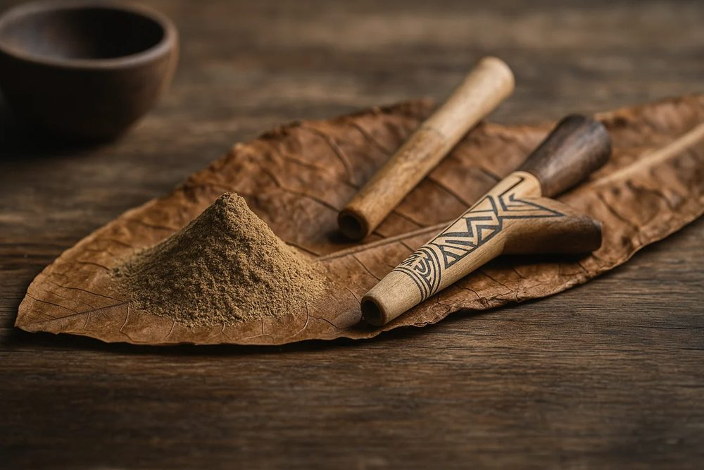

Disponibles localmente en Oaxaca
Medicinas ancestrales y herramientas tradicionales
Traído directamente desde Perú. Disponible localmente en Oaxaca.
Tengo medicina ancestral peruana a la venta localmente en Oaxaca, para que puedas continuar tu práctica en casa.
Pregunta por lo que hay disponible y cómo está elaborado. Solo entrega local.
